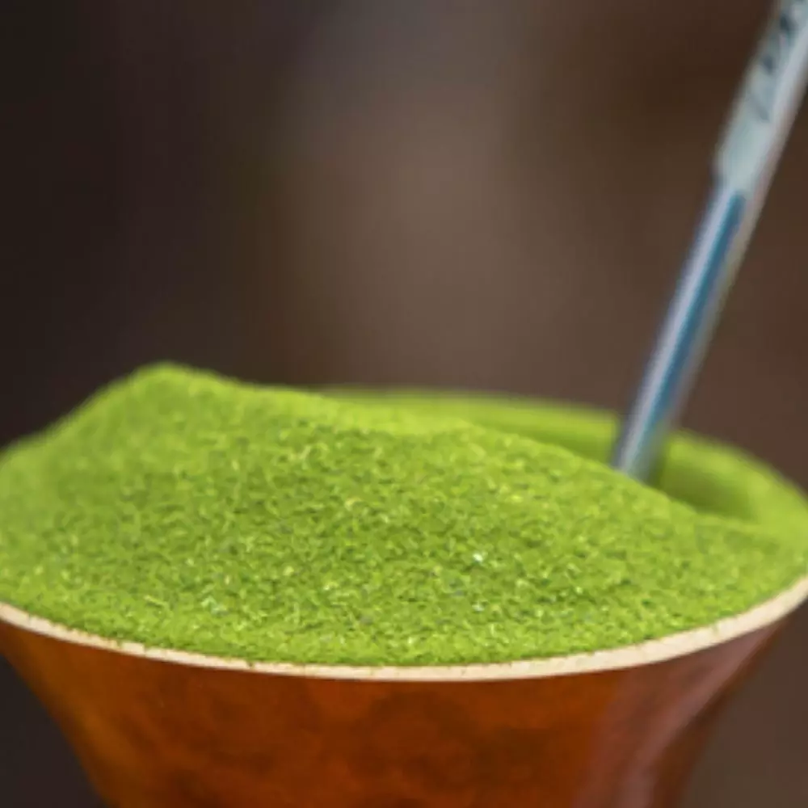
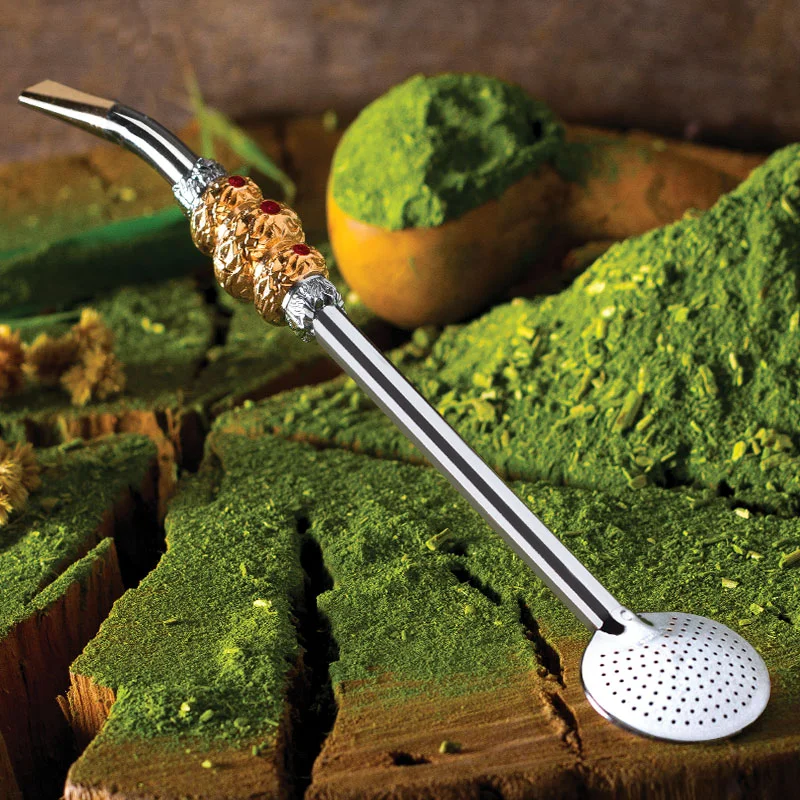
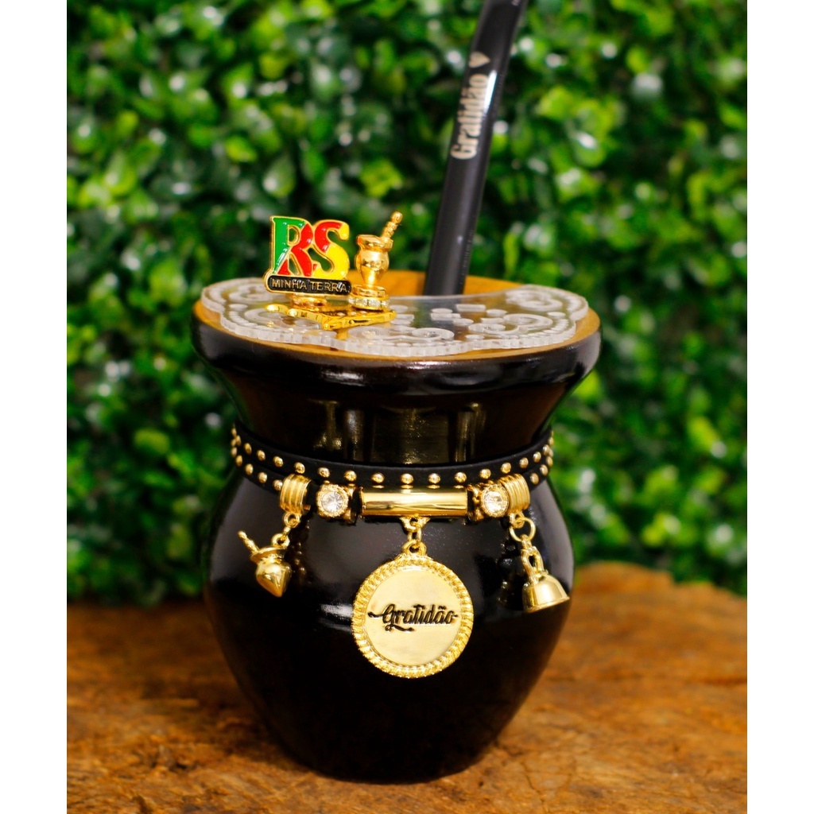

Erva mate
a planta foi descoberta pelos colonizadores espanhóis que se instalaram nas terras de Guayrá, conhecidas atualmente como o estado do Paraná
Bomba de chimarrão
fim do século XVII e início do século XVIII, quando artesãos foram trazidos pelos padres para suprir a carência de peças religiosas na região, o surgimento da bomba de mate
Cuia de chimarrão
Por volta do século XVI, os colonizadores espanhóis entraram em contato com os índios Guaranis no atual estado do Paraná, estes consumiam uma espécie de chá (planta a partir da qual são feitas cuias de chimarrão)